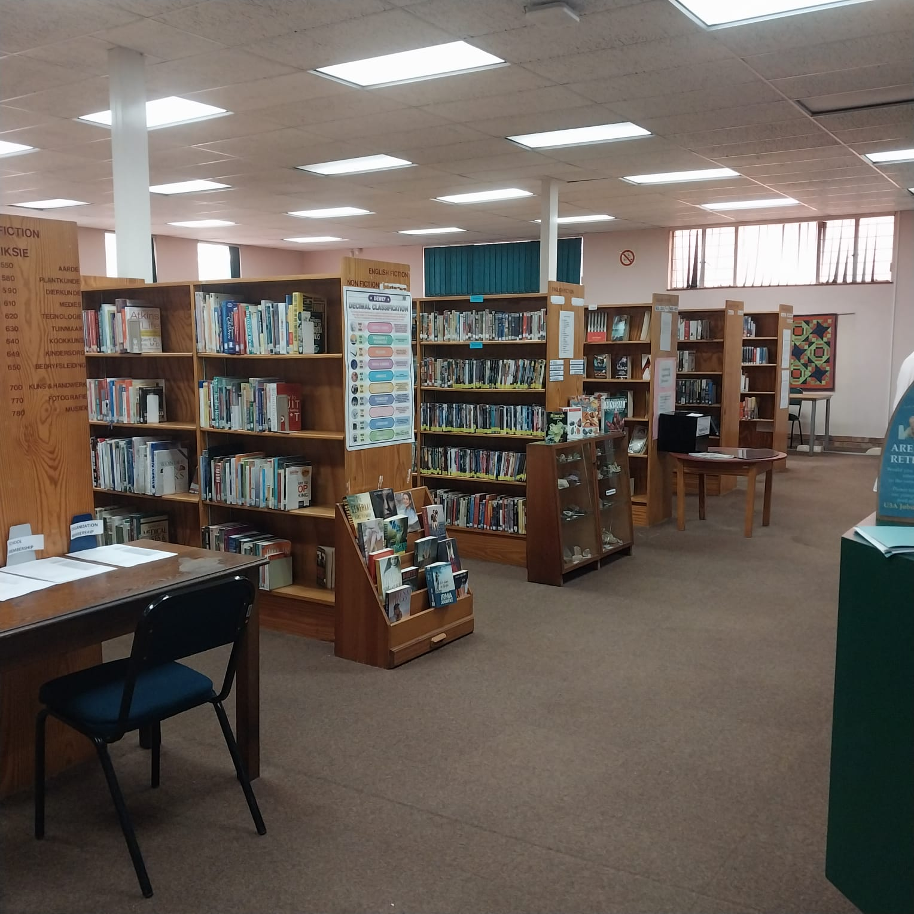
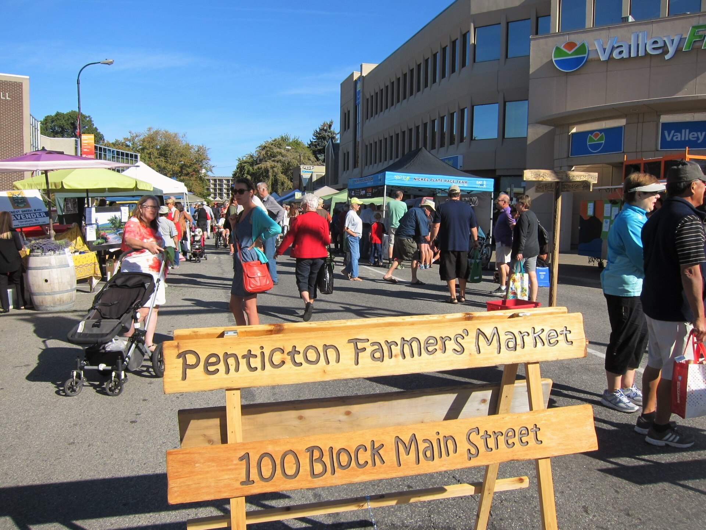

Where would you even start looking?

Full text of peer-reviewed work you can't reach from the open web.
Searches scholarship, not the open web. Free, and it shows who cited whom.
Perplexity searches the live web with links; Elicit and Consensus surface real papers.
Open a good source, read its reference list, chase the ones that fit.
Before you share or cite, pause. Do you even know what this is?
Who made this, and why? Leave the page to find out.
Look for a stronger source on the same claim.
Follow it back to where it started. Quotes, data, the original.
Don't ask "does this look legit?" Ask "who made this, and why?"

Six sources on the food-label question: a peer-reviewed study, a trade-group page, a news article, an anonymous blog, an FDA page, an AI answer. Be ready to say why with SIFT.
On your own. I'll come around.